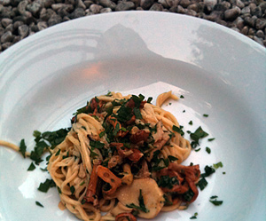

Pasta Chitarra al Funghi
5,5 von 6Im Wiesental nach Steinpilzen und Pfifferlingen suchen. Pilze putzen und mit Knoblauch und einer Schalotte in viel Butter kurz andämpfen. Mit einem Schluck Weisswein und etwas Rahm ablöschen. Würzen und Petersilie darüber geben. Mit Pasta Chitarra servieren.
